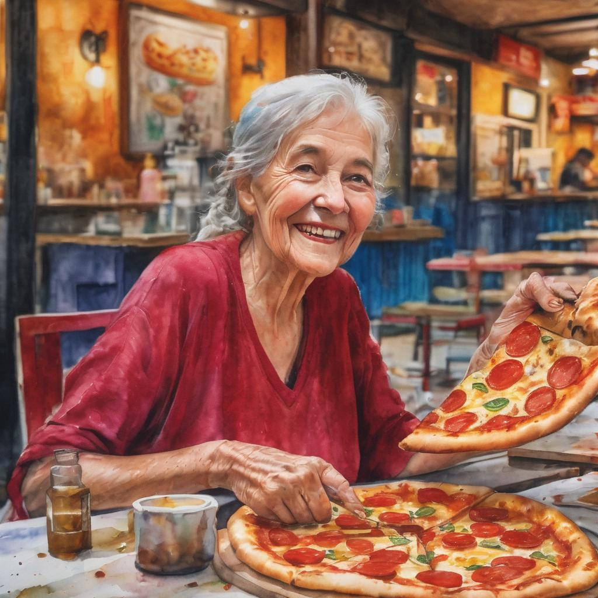

At Kiki's Pizza, we believe that great pizza is not just a meal; it's an experience. Established with a love for crafting mouthwatering pizzas, we take pride in bringing you a culinary journey that tantalizes your taste buds and leaves you craving more.
🌐 Our Story
Kiki's Pizza is born out of a deep-rooted passion for creating the perfect pizza. Named after our founder, Kiki, who has dedicated years to perfecting the art of pizza making, our establishment is a celebration of flavors, quality ingredients, and a commitment to excellence.

🍅 Ingredients Matter
We believe in the power of fresh, high-quality ingredients. From the rich tomato sauce to the finest cheeses and locally sourced toppings, each element is carefully selected to ensure that every bite is a burst of deliciousness.
🔥 Artisanal Craftsmanship
Our pizzas are crafted with the skill and artistry that can only come from a genuine love for the craft. Whether you prefer a classic Margherita, a meat lover's feast, or a veggie delight, our diverse menu has something for everyone.
At Kiki's Pizza, we don't just make pizzas; we create experiences. Join us on a culinary adventure, where every slice tells a story of passion, flavor, and the joy of sharing good food. Your journey to pizza perfection starts here!